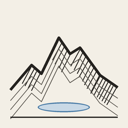

Privacy policy
Last updated: 15 November 2026 · Help and contact
In short: Skizze collects no personal data. There is no account, no advertising, no tracking and no analytics. Your saved views stay on your devices and, if you use iCloud, in your own iCloud. Your location never leaves your iPhone. The app only loads map data: from swisstopo’s public servers, and 3D buildings from GitHub.
1. Controller
Babak Armani, Gundeldingerrain, 4059 Basel, Switzerland
E-mail: click-number-01@pm.me
This policy follows the Swiss Federal Act on Data Protection (FADP) and, where applicable, the EU General Data Protection Regulation (GDPR).
2. Map data from swisstopo and GitHub
When you come close to a valley or download a canton in Offline maps, Skizze loads terrain from data.geo.admin.ch, the public server of the Swiss Federal Office of Topography (swisstopo). Like any internet request, this passes your IP address and technical details (such as the app version) to that server; which part of Switzerland you look at can be inferred from the tiles requested. Skizze sends no identifier, account or location of yours. swisstopo processes these requests under its own privacy policy. With Wi-Fi only switched on, nothing is loaded over mobile data.
The 3D buildings are made by us from swisstopo’s swissBUILDINGS3D data and served from GitHub (GitHub, Inc., a Microsoft company, USA): the list of files from orocoro.github.io and the files themselves from github.com and objects.githubusercontent.com. Skizze loads the buildings of a commune when you come close to it, and the list about once a day. GitHub receives your IP address and technical details, and can tell which communes you look at; it may process these data in the USA under its own privacy statement (docs.github.com/site-policy). Skizze sends GitHub no identifier, account or location of yours. Buildings already loaded are kept on your iPhone, so they are not loaded again. In Low Data Mode, or with Wi-Fi only on and mobile data in use, only buildings already on your iPhone are shown.
3. What Skizze stores on your iPhone
Your saved sketches (view, pen settings and cross-section), downloaded canton packs, cached terrain and 3D buildings, and your settings. We have no access to them.
iCloud. If you are signed in to iCloud, the list of saved views (place, angle, pen settings, cross-section and name, without the pictures) is kept in step across your devices through Apple’s iCloud key-value storage, in your own iCloud account. We cannot read it. To stop it, switch off iCloud for Skizze in the iOS Settings.
Location. Only when you tap Show my location does iOS ask whether Skizze may use your location while the app is open. Skizze uses it only to put a dot on the map and fly there; it is not stored and not sent anywhere. You can withdraw the permission in the iOS Settings at any time.
GPX hikes. A GPX file you open in Skizze is read on your iPhone to draw the track and its profile. It is not uploaded, and Skizze does not keep a copy.
4. Photos and sharing
Only when you choose Save Image does iOS ask for permission to add pictures to your photo library. Skizze cannot read your photos. When you share a sketch, a poster or a link, you choose the app and the recipient; we receive nothing. A shared link holds only the view’s place, angle, pen settings, cross-section and name. Opened on a device without Skizze, it shows a page on orocoro.github.io (GitHub, see section 2) that passes the view to the app; the page itself sends nothing anywhere.
5. Porta
“Open in Porta” opens the Porta app with the commune number. No other data is passed.
6. No tracking
Skizze contains no advertising, analytics, crash-reporting or tracking software and no third-party code that collects data.
7. Data processed by Apple
When you download Skizze from the App Store, Apple processes data under its own terms. If you agreed on your iPhone to share analytics with app developers, Apple gives us aggregated statistics and crash reports that do not identify you. We use them only to fix problems.
The Pen Set and tips are bought through Apple’s In-App Purchase. Apple handles the payment; Skizze checks the purchase on your iPhone and we receive no payment or personal details, only Apple’s aggregated sales reports.
8. When you write to us
If you e-mail us, we use your address and message only to reply and delete them when they are no longer needed for that.
9. Deleting data
Delete canton packs in Offline maps and sketches in Sketches. A view deleted on one device is also removed on your other devices. Deleting the app removes everything it stored on that iPhone.
10. Your rights
You have the right to information, correction and deletion of your data. As we store no data about you, this usually concerns only e-mails you sent us. Write to the address above. You may also complain to the Swiss Federal Data Protection and Information Commissioner (FDPIC) or, in the EU, to your data protection authority.
11. Changes
If Skizze changes the way it handles data, we will update this policy beforehand.
Kurz gesagt: Skizze sammelt keine Personendaten. Es gibt kein Konto, keine Werbung, kein Tracking und keine Analyse. Ihre gesicherten Ansichten bleiben auf Ihren Geräten und, wenn Sie iCloud nutzen, in Ihrer eigenen iCloud. Ihr Standort verlässt Ihr iPhone nie. Die App lädt nur Kartendaten: von den öffentlichen Servern von swisstopo und 3D-Gebäude von GitHub.
1. Verantwortlich
Babak Armani, Gundeldingerrain, 4059 Basel, Schweiz
E-Mail: click-number-01@pm.me
Diese Erklärung richtet sich nach dem Schweizer Datenschutzgesetz (DSG) und, soweit anwendbar, der EU-Datenschutz-Grundverordnung (DSGVO).
2. Kartendaten von swisstopo und GitHub
Wenn Sie sich einem Tal nähern oder unter Offline-Karten einen Kanton laden, holt Skizze Gelände von data.geo.admin.ch, dem öffentlichen Server des Bundesamts für Landestopografie (swisstopo). Wie jede Internetanfrage übermittelt dies Ihre IP-Adresse und technische Angaben (etwa die App-Version) an diesen Server; aus den geladenen Kacheln lässt sich ablesen, welchen Teil der Schweiz Sie betrachten. Skizze sendet keine Kennung, kein Konto und keinen Standort von Ihnen. swisstopo verarbeitet diese Anfragen nach seiner eigenen Datenschutzerklärung. Mit eingeschaltetem Nur WLAN wird über Mobilfunk nichts geladen.
Die 3D-Gebäude erstellen wir aus den swisstopo-Daten swissBUILDINGS3D; sie werden von GitHub ausgeliefert (GitHub, Inc., ein Unternehmen von Microsoft, USA): die Liste der Dateien von orocoro.github.io, die Dateien selbst von github.com und objects.githubusercontent.com. Skizze lädt die Gebäude einer Gemeinde, wenn Sie sich ihr nähern, und die Liste etwa einmal täglich. GitHub erhält Ihre IP-Adresse und technische Angaben und kann erkennen, welche Gemeinden Sie betrachten; GitHub kann diese Daten nach seiner eigenen Datenschutzerklärung in den USA bearbeiten (docs.github.com/site-policy). Skizze übermittelt GitHub keine Kennung, kein Konto und keinen Standort von Ihnen. Bereits geladene Gebäude bleiben auf Ihrem iPhone und werden nicht erneut geladen. Im Datensparmodus, oder mit Nur WLAN über Mobilfunk, werden nur Gebäude gezeigt, die schon auf Ihrem iPhone sind.
3. Was Skizze auf Ihrem iPhone speichert
Ihre gesicherten Skizzen (Ansicht, Federeinstellungen und Querschnitt), geladene Kantone, zwischengespeichertes Gelände und 3D-Gebäude sowie Ihre Einstellungen. Wir haben keinen Zugriff darauf.
iCloud. Wenn Sie bei iCloud angemeldet sind, wird die Liste der gesicherten Ansichten (Ort, Blickwinkel, Federeinstellungen, Querschnitt und Name, ohne die Bilder) über den iCloud-Schlüssel-Wert-Speicher von Apple in Ihrem eigenen iCloud-Konto zwischen Ihren Geräten abgeglichen. Wir können sie nicht lesen. Um das zu beenden, schalten Sie iCloud für Skizze in den iOS-Einstellungen aus.
Standort. Erst wenn Sie Meinen Standort zeigen tippen, fragt iOS, ob Skizze Ihren Standort verwenden darf, während die App offen ist. Skizze nutzt ihn nur, um einen Punkt auf der Karte zu zeigen und dorthin zu fliegen; er wird weder gespeichert noch irgendwohin gesendet. Sie können die Erlaubnis jederzeit in den iOS-Einstellungen zurückziehen.
GPX-Wanderungen. Eine GPX-Datei, die Sie in Skizze öffnen, wird auf Ihrem iPhone gelesen, um den Track und sein Profil zu zeichnen. Sie wird nicht hochgeladen, und Skizze behält keine Kopie.
4. Fotos und Teilen
Erst wenn Sie Bild sichern wählen, fragt iOS um Erlaubnis, Bilder zu Ihrer Fotomediathek hinzuzufügen. Skizze kann Ihre Fotos nicht lesen. Wenn Sie eine Skizze, ein Poster oder einen Link teilen, wählen Sie App und Empfänger; wir erhalten nichts. Ein geteilter Link enthält nur Ort, Blickwinkel, Federeinstellungen, Querschnitt und Namen der Ansicht. Auf einem Gerät ohne Skizze zeigt er eine Seite auf orocoro.github.io (GitHub, siehe Abschnitt 2), die die Ansicht an die App weitergibt; die Seite selbst sendet nichts.
5. Porta
«In Porta öffnen» öffnet die App Porta mit der Gemeindenummer. Andere Daten werden nicht übergeben.
6. Kein Tracking
Skizze enthält keine Werbung, keine Analyse-, Absturzmelde- oder Tracking-Software und keine Software von Drittanbietern, die Daten sammelt.
7. Daten, die Apple verarbeitet
Beim Laden von Skizze aus dem App Store verarbeitet Apple Daten nach seinen eigenen Bedingungen. Wenn Sie auf Ihrem iPhone zugestimmt haben, Analysedaten mit Entwicklern zu teilen, stellt Apple uns zusammengefasste, nicht auf Sie zurückführbare Statistiken und Absturzberichte zur Verfügung. Wir nutzen sie nur, um Fehler zu beheben.
Das Stiftset und Trinkgelder kaufen Sie über In-App-Käufe von Apple. Apple wickelt die Zahlung ab; Skizze prüft den Kauf auf Ihrem iPhone, und wir erhalten keine Zahlungs- oder Personendaten, nur die zusammengefassten Verkaufsberichte von Apple.
8. Wenn Sie uns schreiben
Wenn Sie uns per E-Mail kontaktieren, verwenden wir Ihre Adresse und Nachricht nur, um zu antworten, und löschen sie, wenn sie dafür nicht mehr nötig sind.
9. Daten löschen
Löschen Sie Kantone unter Offline-Karten und Skizzen unter Skizzen. Eine auf einem Gerät gelöschte Ansicht wird auch auf Ihren anderen Geräten entfernt. Wenn Sie die App löschen, wird alles entfernt, was sie auf diesem iPhone gespeichert hat.
10. Ihre Rechte
Sie haben das Recht auf Auskunft, Berichtigung und Löschung Ihrer Daten. Da wir keine Daten über Sie speichern, betrifft das in der Regel nur E-Mails, die Sie uns geschickt haben. Schreiben Sie an die Adresse oben. Sie können sich auch beim Eidgenössischen Datenschutz- und Öffentlichkeitsbeauftragten (EDÖB) oder, in der EU, bei Ihrer Datenschutzbehörde beschweren.
11. Änderungen
Ändert sich die Art, wie Skizze mit Daten umgeht, passen wir diese Erklärung vorher an.
En bref : Skizze ne collecte aucune donnée personnelle. Il n’y a ni compte, ni publicité, ni suivi, ni analyse. Vos vues enregistrées restent sur vos appareils et, si vous utilisez iCloud, dans votre propre iCloud. Votre position ne quitte jamais votre iPhone. L’app ne charge que des données cartographiques : depuis les serveurs publics de swisstopo, et les bâtiments 3D depuis GitHub.
1. Responsable
Babak Armani, Gundeldingerrain, 4059 Basel, Suisse
E-mail : click-number-01@pm.me
Cette déclaration suit la loi fédérale sur la protection des données (LPD) et, lorsqu’il s’applique, le règlement général sur la protection des données de l’UE (RGPD).
2. Données cartographiques de swisstopo et GitHub
Quand vous vous approchez d’une vallée ou téléchargez un canton dans Cartes hors ligne, Skizze charge le terrain depuis data.geo.admin.ch, le serveur public de l’Office fédéral de topographie (swisstopo). Comme toute requête sur Internet, cela transmet votre adresse IP et des informations techniques (comme la version de l’app) à ce serveur ; les tuiles demandées permettent de déduire quelle partie de la Suisse vous regardez. Skizze n’envoie ni identifiant, ni compte, ni position. swisstopo traite ces requêtes selon sa propre déclaration de protection des données. Avec Wi-Fi uniquement activé, rien n’est chargé par les données mobiles.
Les bâtiments 3D sont produits par nous à partir des données swissBUILDINGS3D de swisstopo et servis par GitHub (GitHub, Inc., une société de Microsoft, États-Unis) : la liste des fichiers depuis orocoro.github.io, les fichiers eux-mêmes depuis github.com et objects.githubusercontent.com. Skizze charge les bâtiments d’une commune quand vous vous en approchez, et la liste environ une fois par jour. GitHub reçoit votre adresse IP et des informations techniques, et peut savoir quelles communes vous regardez ; il peut traiter ces données aux États-Unis selon sa propre déclaration de confidentialité (docs.github.com/site-policy). Skizze n’envoie à GitHub aucun identifiant, compte ni position. Les bâtiments déjà chargés restent sur votre iPhone et ne sont pas rechargés. En mode données réduites, ou avec Wi-Fi uniquement sur le réseau mobile, seuls les bâtiments déjà sur votre iPhone sont affichés.
3. Ce que Skizze enregistre sur votre iPhone
Vos croquis enregistrés (vue, réglages de la plume et coupe), les cantons téléchargés, le terrain et les bâtiments 3D en cache, et vos réglages. Nous n’y avons pas accès.
iCloud. Si vous êtes connecté à iCloud, la liste des vues enregistrées (lieu, angle, réglages de la plume, coupe et nom, sans les images) est synchronisée entre vos appareils grâce au stockage clé-valeur iCloud d’Apple, dans votre propre compte iCloud. Nous ne pouvons pas la lire. Pour l’arrêter, désactivez iCloud pour Skizze dans les Réglages d’iOS.
Position. Ce n’est que lorsque vous touchez Afficher ma position qu’iOS demande si Skizze peut utiliser votre position pendant que l’app est ouverte. Skizze ne s’en sert que pour placer un point sur la carte et s’y rendre ; elle n’est ni enregistrée ni envoyée nulle part. Vous pouvez retirer l’autorisation à tout moment dans les Réglages d’iOS.
Randonnées GPX. Un fichier GPX ouvert dans Skizze est lu sur votre iPhone pour dessiner la trace et son profil. Il n’est pas envoyé, et Skizze n’en garde pas de copie.
4. Photos et partage
Ce n’est que lorsque vous choisissez Enregistrer l’image qu’iOS demande l’autorisation d’ajouter des images à votre photothèque. Skizze ne peut pas lire vos photos. Quand vous partagez un croquis, une affiche ou un lien, vous choisissez l’app et le destinataire ; nous ne recevons rien. Un lien partagé ne contient que le lieu, l’angle, les réglages de la plume, la coupe et le nom de la vue. Ouvert sur un appareil sans Skizze, il affiche une page sur orocoro.github.io (GitHub, voir section 2) qui transmet la vue à l’app ; la page elle-même n’envoie rien.
5. Porta
« Ouvrir dans Porta » ouvre l’app Porta avec le numéro de la commune. Aucune autre donnée n’est transmise.
6. Aucun suivi
Skizze ne contient aucune publicité, aucun logiciel d’analyse, de rapport de plantage ou de suivi, ni aucun code tiers qui collecte des données.
7. Données traitées par Apple
Quand vous téléchargez Skizze sur l’App Store, Apple traite des données selon ses propres conditions. Si vous avez accepté sur votre iPhone de partager des analyses avec les développeurs, Apple nous fournit des statistiques agrégées et des rapports de plantage qui ne vous identifient pas. Nous ne les utilisons que pour corriger des problèmes.
Le jeu de crayons et les pourboires s’achètent par les achats intégrés d’Apple. Apple gère le paiement ; Skizze vérifie l’achat sur votre iPhone et nous ne recevons aucune donnée de paiement ni personnelle, seulement les rapports de ventes agrégés d’Apple.
8. Quand vous nous écrivez
Si vous nous écrivez par e-mail, nous utilisons votre adresse et votre message uniquement pour vous répondre et les supprimons quand ils ne sont plus nécessaires à cette fin.
9. Supprimer des données
Supprimez les cantons dans Cartes hors ligne et les croquis dans Croquis. Une vue supprimée sur un appareil l’est aussi sur vos autres appareils. Supprimer l’app efface tout ce qu’elle a enregistré sur cet iPhone.
10. Vos droits
Vous avez le droit d’accéder à vos données, de les faire rectifier et supprimer. Comme nous ne conservons aucune donnée sur vous, cela ne concerne en général que les e-mails que vous nous avez envoyés. Écrivez à l’adresse ci-dessus. Vous pouvez aussi vous adresser au Préposé fédéral à la protection des données et à la transparence (PFPDT) ou, dans l’UE, à votre autorité de protection des données.
11. Modifications
Si Skizze change sa manière de traiter les données, nous mettrons cette déclaration à jour au préalable.
In breve: Skizze non raccoglie dati personali. Non ci sono account, pubblicità, tracciamento né analisi. Le sue viste salvate restano sui suoi dispositivi e, se usa iCloud, nel suo iCloud. La sua posizione non lascia mai il suo iPhone. L’app carica solo dati cartografici: dai server pubblici di swisstopo, e gli edifici 3D da GitHub.
1. Titolare
Babak Armani, Gundeldingerrain, 4059 Basel, Svizzera
E-mail: click-number-01@pm.me
Questa informativa segue la legge federale sulla protezione dei dati (LPD) e, dove applicabile, il regolamento generale sulla protezione dei dati dell’UE (RGPD).
2. Dati cartografici di swisstopo e GitHub
Quando si avvicina a una valle o scarica un cantone in Carte offline, Skizze carica il terreno da data.geo.admin.ch, il server pubblico dell’Ufficio federale di topografia (swisstopo). Come ogni richiesta su Internet, questo trasmette a quel server il suo indirizzo IP e dati tecnici (come la versione dell’app); dalle tessere richieste si può dedurre quale parte della Svizzera sta guardando. Skizze non invia alcun identificativo, account o posizione. swisstopo tratta queste richieste secondo la propria informativa sulla protezione dei dati. Con Solo Wi-Fi attivo, nulla viene caricato con i dati mobili.
Gli edifici 3D sono prodotti da noi a partire dai dati swissBUILDINGS3D di swisstopo e serviti da GitHub (GitHub, Inc., una società di Microsoft, USA): l’elenco dei file da orocoro.github.io, i file stessi da github.com e objects.githubusercontent.com. Skizze carica gli edifici di un comune quando vi si avvicina, e l’elenco circa una volta al giorno. GitHub riceve il suo indirizzo IP e informazioni tecniche e può sapere quali comuni guarda; può trattare questi dati negli USA secondo la propria informativa sulla privacy (docs.github.com/site-policy). Skizze non invia a GitHub alcun identificativo, account o posizione. Gli edifici già caricati restano sul suo iPhone e non vengono ricaricati. In modalità dati ridotti, o con Solo Wi-Fi sulla rete mobile, vengono mostrati solo gli edifici già presenti sul suo iPhone.
3. Cosa salva Skizze sul suo iPhone
I suoi schizzi salvati (vista, impostazioni della penna e sezione), i cantoni scaricati, il terreno e gli edifici 3D in cache e le sue impostazioni. Noi non vi abbiamo accesso.
iCloud. Se ha effettuato l’accesso a iCloud, l’elenco delle viste salvate (luogo, angolazione, impostazioni della penna, sezione e nome, senza le immagini) viene allineato tra i suoi dispositivi tramite l’archivio chiave-valore iCloud di Apple, nel suo account iCloud. Noi non possiamo leggerlo. Per interromperlo, disattivi iCloud per Skizze nelle Impostazioni di iOS.
Posizione. Solo quando tocca Mostra la mia posizione iOS chiede se Skizze può usare la sua posizione mentre l’app è aperta. Skizze la usa solo per mostrare un punto sulla mappa e spostarsi lì; non viene salvata né inviata altrove. Può revocare il permesso in qualsiasi momento nelle Impostazioni di iOS.
Escursioni GPX. Un file GPX aperto in Skizze viene letto sul suo iPhone per disegnare la traccia e il suo profilo. Non viene caricato e Skizze non ne conserva una copia.
4. Foto e condivisione
Solo quando sceglie Salva immagine iOS chiede il permesso di aggiungere immagini alla sua libreria foto. Skizze non può leggere le sue foto. Quando condivide uno schizzo, un poster o un link, è lei a scegliere l’app e il destinatario; noi non riceviamo nulla. Un link condiviso contiene solo luogo, angolazione, impostazioni della penna, sezione e nome della vista. Aperto su un dispositivo senza Skizze, mostra una pagina su orocoro.github.io (GitHub, vedi sezione 2) che passa la vista all’app; la pagina stessa non invia nulla.
5. Porta
«Apri in Porta» apre l’app Porta con il numero del comune. Nessun altro dato viene trasmesso.
6. Nessun tracciamento
Skizze non contiene pubblicità, software di analisi, di segnalazione dei crash o di tracciamento, né codice di terzi che raccoglie dati.
7. Dati trattati da Apple
Quando scarica Skizze dall’App Store, Apple tratta dati secondo le proprie condizioni. Se sul suo iPhone ha acconsentito a condividere le analisi con gli sviluppatori, Apple ci fornisce statistiche aggregate e rapporti sui crash che non la identificano. Li usiamo solo per correggere problemi.
Il set di matite e le mance si acquistano con gli acquisti in-app di Apple. Apple gestisce il pagamento; Skizze verifica l’acquisto sul suo iPhone e noi non riceviamo dati di pagamento né personali, solo i rapporti di vendita aggregati di Apple.
8. Quando ci scrive
Se ci scrive per e-mail, usiamo il suo indirizzo e il messaggio solo per risponderle e li cancelliamo quando non servono più a questo scopo.
9. Cancellare i dati
Elimini i cantoni in Carte offline e gli schizzi in Schizzi. Una vista eliminata su un dispositivo viene rimossa anche sugli altri. Eliminando l’app si rimuove tutto ciò che ha salvato su questo iPhone.
10. I suoi diritti
Ha il diritto di accedere ai suoi dati, di farli rettificare e cancellare. Poiché non conserviamo dati su di lei, ciò riguarda di solito solo le e-mail che ci ha inviato. Scriva all’indirizzo sopra. Può anche rivolgersi all’Incaricato federale della protezione dei dati e della trasparenza (IFPDT) o, nell’UE, alla sua autorità di protezione dei dati.
11. Modifiche
Se Skizze cambia il modo in cui tratta i dati, aggiorneremo prima questa informativa.